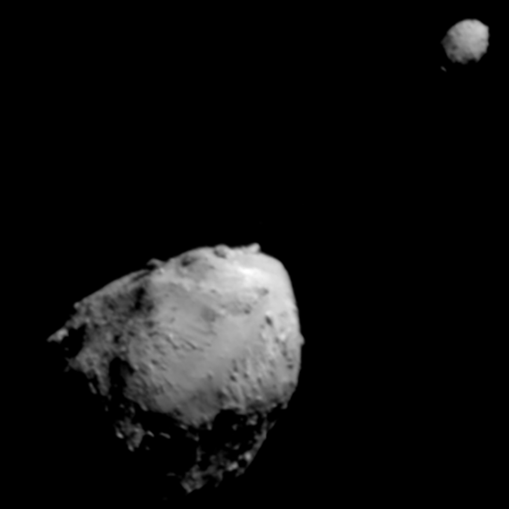

Near-Earth asteroids are a group of several families of asteroids that orbit with orbits that come within 1.3 AU of the Sun, and thus are close to Earth.
Due to their proximity to Earth, they are of significant interest and are easier to detect than other small families near other planets.
There are four distinct groups based on their orbit relative to that of Earth.
Several asteroids that have very close orbits to Earth are classified as potentially hazardous.
For that reason, NASA launched the mission DART to test asteroid deflection, successfully changing the orbits of Didymos's moon Dimorphos.
Other agencies are also considering similar missions.

Eros, a large near-Earth asteroid, visited by NEAR Shoemaker
The first near-Earth asteroid to be discovered was Eros in 1898.
The asteroid was subject to several extensive observation campaigns, primarily because measurements of its orbit helped to determine the exact distance of the Earth from the Sun.
In 1908, the Tunguska event was recorded in Russia, the largest object to strike Earth in recorded history, estimated to be up to 85 km in diameter.
It resulted in several thousand kilometers of burnt forest and possibly three deaths.
In 1989, the 300 m asteroid Asclepius passed within 700 000 km from Earth.
In 1937, the 800 m asteroid Hermes was discovered when it passed the Earth at twice the distance of the Moon.
It became too faint and got lost before being rediscovered in 2003, receiving a number 69230.
An even closer approach was that of Icarus in 1968 at a distance of 0.0425 AU (6,360,000 km), or 16.5 times the distance of the Moon.
It was the first asteroid to be observed with radar.
In 1989, the 300 m asteroid Asclepius passed within 700 000 km from Earth.
If it had hit Earth at the time, it could have produced an explosion of 20 000 megatons, never recorded in history.
This pointed out the dangers of such objects, especially given that it was discovered after the closest approach.
Similarly threatening was Apophis, an asteroid that in 2004 was predicted to have a 2.7% chance of collision with Earth in 2029.
Later estimates ruled out the collision event and instead it will pass within only 31 000 km.
The largest to actually enter the atmosphere and become a meteor since 1908's Tunguska event was in 2013 near Chelybinsk, Russia, likely measuring around 20 km.
There are four groups of near-Earth asteroids based on distance from the Sun and the crossing of Earth's orbit.
The Amor group are NEAs that orbit outside the orbits of Earth.
The largest of the Amors and largest NEA is Ganymed.
The Apollo group comprises NEAs that cross the Earth orbit, but have a semi-majoral axis greater than 1 AU.
They are the most numerous of the four groups.
Largest of the Apollos is the asteroid Sisyphus.
The Aten group includes NEAs that cross the Earth orbit, but have a semi-majoral axis of less than 1 AU.
The Atira group is the smallest group of NEAs, and includes those that orbit within Earth's.
Some asteroids have the possibility to approach Earth at a very close distance and in a worst-case scenario collide with the surface.
This makes them potentially hazardous and are of great interest for predicting possible disasters.
For an asteroid to be considered potentially hazardous, it has to be larger than about 140 meters and comes within 0.05 AU of Earth’s orbit.
NASA and other agencies track NEAs and calculate their orbits to predict close approaches and potential impacts, using surveyors like Spacewatch, NEAT, NEOWISE, ATLAS and many more.
There have been numerous documented cases of smaller objects entering the atmosphere.
There are two major risk assesment scales - the Torino scale and the Palermo scale.
The Torino scale uses the probability and the kinetic energy of an impact to give a score between 0 and 10, with 10 being the most severe.
A more complex rating is the logarithmic Palermo scale which uses the two variables, as well as the time interval until the potential impact and can be either negative (low risk) or positive (higher risk).
So far only three asteroids were considered of higher risk according to that scale, including Apophis, which had a value of 1,1.
There have been numerous documented cases of smaller objects entering the atmosphere.
Two of the most notable recent examples are the Chelyabins and Tunguska events.
The former is more recent, occuring in 2013 and has caused thousands of injuries and millions in property damages.
Tunguska, however, was a much more hazardous, causing an explosion around 3 - 50 megatons, destroying 2000 km of forest and killed possibly up to 3 people.

The first sample return of an asteroid, Itokawa, was performed by Hayabusa. Attribution: ISAS/JAXA. Source
Several asteroid missions have targeted near-Earth asteroids for their proximity.
The first mission to visit one was NEAR Shoemaker, launched in 1996, which first passed by the main-belt Mathilde, after which it entered orbit around Eros.
After one year in orbit, the spacecraft landed on the surface and transmited data for two weeks.
Hayabusa, launched by JAXA in 2003, was the first sample return mission.
It visited the small near-Eart asteroid Itokawa, after which it returned a capsule of regolith back to Earth.
A follow-up mission, Hayabusa-2, visited another asteroid - Ryugu.
The samples returned contained not just silicate rocks, water ice, and simple organics, but also more complex organic compounds like uracil and vitamin B3.
The spacecraft's mission has been extended and will now visit two more asteroids.
Meanwhile, the NASA mission OSIRIS-REx mapped extensively the potentially-hazardous asteroid Bennu after which it landed to collect regolith.
The returned sample showed the presence of amino acids and all nucleobases for DNA and RNA.
The next target of the mission (renamed OSIRIX-APEx for the extended mission) will next target another hazardous asteroid - Apophis.
There are also two proposal missions by ESA to Apophis but without taking samples.


Didymos with its moon Dimorphos and a replay of the impact
DART was launched in 2021 to test asteroid deflection.
It reached the small near-Earth asteroid Didymos and its even smaller moon Dimorphos.
Dimorphos measures at around 151 m in diameter, making it a perfect test target for the first ever asteroid deflection test.
The impact reduced the orbital period with 33 minutes and ejected a million kilograms of material.
Hera, a follow-up mission by ESA is on its way to the system to further investigate it.
One more near-Earth asteroid has been visited as a secondary target, that being Toutatis by Chang'e 2.
After Hayabusa 2#'s visit of Torifune and Hera's visit of the Didymos system, the next mission to an asteroid is Tianwen-2, launched in 2025.
This will be the fifth sample return of an asteroid and the second asteroid visited by CNSA, the target being Kamo'oalewa.
The spacecraft will then return a capsule and go for its second target, the asteroid 311P/PanSTARRS.
CNSA is also proposing a deflection test mission this decade.
JAXA is sending a tech demonstration spacecraft DESTINY+ to the asteroid Phaethon, parent body of the Geminids meteor shower.
It will collect samples from the dust it leaves behind.
External links
{% include catminor-planets.html %}
{kind=link}